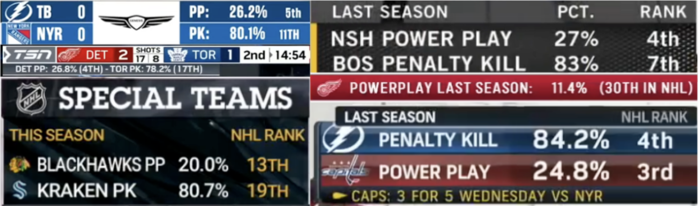

Redefining the NHL's Special Teams Metrics
For decades, the National Hockey League has relied on a simple, binary metric to evaluate power plays and penalty kills: PP% and PK%. A team either scores on a power play, or they don’t. Likewise, a team either kills a…